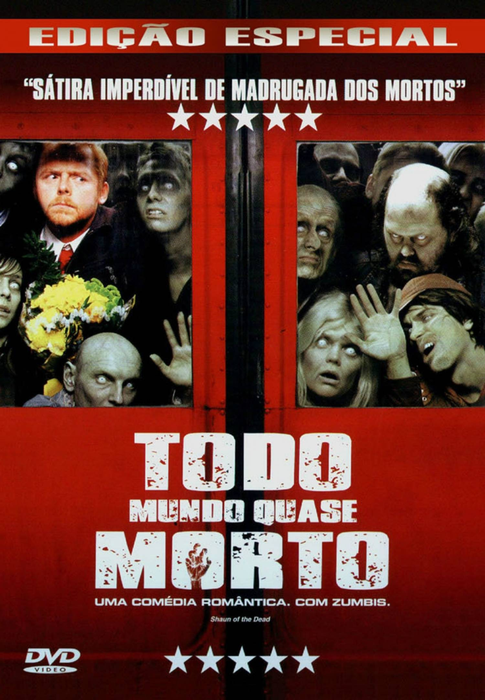
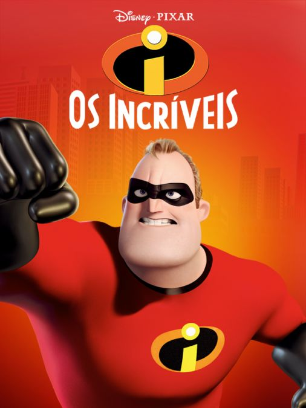

A morte do treinador de basquete de infância de velhos amigos reúne a turma no mesmo lugar que celebraram um campeonato anos atrás. Os amigos, acompanhados de suas esposas e filhos, descobrem que idade não significa o mesmo que maturidade.

O jogador de hóquei Derek Thompson é o terror do gelo e leva o apelido de "Fada do Dente" por quebrar os dentes de seus adversários. Quando Derek acaba com o sonho de uma jovem fã, ele é rapidamente sentenciado a cumprir pena de uma semana, representando uma real fada do dente, com asas e varinha mágica. Embora ele não goste muito, seu novo trabalho o ajuda a redescobrir seus sonhos deixados para trás.

Shaun trabalha como vendedor e divide uma casa com seu melhor amigo. Ele costuma ir sempre ao pub local, mas Liz, sua namorada, está cansada de fazer sempre o mesmo programa. Irritada, ela decide terminar a relação. Shaun, arrasado, decide beber todas, sem notar que as pessoas à sua volta estão se tornando zumbis.
O policial de Nova York John McClane está visitando sua família no Natal. Ele participa de uma confraternização de fim de ano na sede da empresa japonesa em que a esposa trabalha. A festa é interrompida por terroristas que invadem o edifício de luxo. McClane não demora a perceber que não há ninguém para salvá-los, a não ser ele próprio.

Cinco assassinos se encontram em um trem-bala veloz de Tóquio a Morioka com apenas algumas paradas entre eles. Eles descobrem que suas missões não são desvinculadas uma da outra. A questão é: quem sairá vivo do trem e o que os espera na estação terminal?

Baseado no famoso jogo Batalha Naval, o filme acompanha a jornada de um navio que se depara com um exército alienígena que tenta conquistar a Terra. Para defender o planeta, a tripulação precisa confiar em uma estratégia única.

Um homem que adora todas as coisas diabólicas, o supervilão Gru traça um plano para roubar a lua. Rodeado de um exército de pequenos ajudantes e seu arsenal de armas e máquinas de guerra, Gru se prepara para destruir quem atravessar seu caminho. Mas ele não esperava pelo seu maior desafio: três adoráveis órfãs que querem ter Gru como pai.

Shrek é um ogro rabugento e nada sociável que se vê com um problema enorme: todas as criaturas de contos de fadas foram despejadas no pântano onde vive. Determinado a tirá-las dali e voltar a viver em paz, ele faz um trato com o príncipe do reino, que por sua vez precisa de alguém bruto e forte para resgatar a princesa Fiona, com quem o monarca pretende se casar para virar rei.

Depois do governo banir o uso de superpoderes, o maior herói do planeta, o Sr. Incrível, vive de forma pacata com sua família. Apesar de estar feliz com a vida doméstica, o Sr. Incrível ainda sente falta dos tempos em que viveu como super-herói, e sua grande chance de entrar em ação novamente surge quando um velho inimigo volta a atacar. Só que agora ele precisa contar com a ajuda de toda a família para vencer o vilão.
Mike e Sulley, alunos promissores da Universidade Monstros, são forçados a se unirem quando sua disputa acirrada pelo posto de aluno mais assustador da turma foge ao controle e eles acabam sendo expulsos da faculdade.